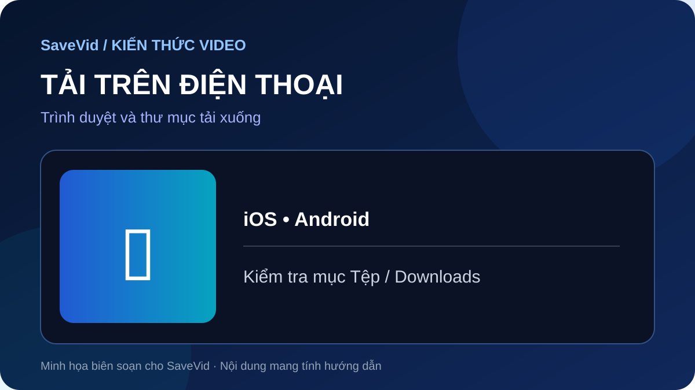

Hướng dẫn lưu video trên iPhone và Android

Các bước tải tệp, tìm thư mục Downloads và xử lý trường hợp trình duyệt mở video thay vì lưu.
Bắt đầu từ trình duyệt
Mở SaveVid trên trình duyệt, dán liên kết công khai hợp lệ và chọn định dạng có sẵn. Đảm bảo kết nối mạng ổn định.
Trên iPhone
Tệp tải về thường có thể tìm trong ứng dụng Tệp và thư mục Downloads, tùy trình duyệt và thiết lập của thiết bị.
Trên Android
Tìm tệp trong trình quản lý tệp hoặc thư mục Downloads. Một số trình duyệt yêu cầu xác nhận trước khi tải.
Khi video mở trong tab mới
Nếu trình duyệt phát video thay vì tải, hãy sử dụng tùy chọn lưu tệp của trình duyệt nếu được hỗ trợ. Không cài tiện ích không rõ nguồn gốc.
Lưu ý: Chỉ tải và sử dụng nội dung khi có quyền phù hợp; khả năng tải phụ thuộc nguồn video và dịch vụ API.